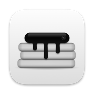

Learn it in a minute
Short lessons you do with your own hands, in a practice notch inside the app. The songs are made up and silent, so your real music and files are never touched.
Lesson: Now Playing
Open the player
A pretend song is playing.
A free Mac app that turns the notch into a home for your music and the files you need next. For MacBooks with a notch, on macOS 15 or later.
Pick one and try it. It's the same working notch as at the top, with practice songs and example files.
Short lessons you do with your own hands, in a practice notch inside the app. The songs are made up and silent, so your real music and files are never touched.
Lesson: Now Playing
Open the player
A pretend song is playing.
Switch Now Playing or the Shelf off, change their order, and star the ones that get a tab. The first two sit in the small spots beside the notch.
This Shelf holds 16 example items, so its count shows beside the notch.
Pick keys like ⌥⌘N to open and close the notch wherever you are. Shortcuts macOS needs, like ⌘Q, are kept free.
Click the keys, then press new ones.
While a film plays full screen the notch steps aside, and it's back as soon as you move the pointer. Games and other apps you choose can hide it completely.
Press Watch to play the film full screen.
See how long you listened, your top songs and how you use the notch, for up to 90 days. It's one file on your Mac, and you can clear it any time.
Minutes listened per day
Top songs
Nothing yet. Play some music and it shows up here.
PancakeNotch rests in under 50 MB of memory, uses about 0% of your processor while nothing happens, and goes online once a day, only to ask if there's an update.

PancakeNotch is free and open source, made in the open on GitHub. There are no accounts, ads or analytics, and every change is measured against a memory budget before it ships.The update check can be switched off, and an update never installs until you say so. This website doesn't track you either: no cookies, and nothing loaded from anywhere else.
First, download PancakeNotch.zip and open it.
Then drag PancakeNotch into Applications.
Next, open it. It isn't notarized by Apple, which takes a paid account, so macOS asks once: click Done, then Open Anyway in System Settings › Privacy & Security. Step-by-step help
After that, updates arrive by themselves and ask before they install.